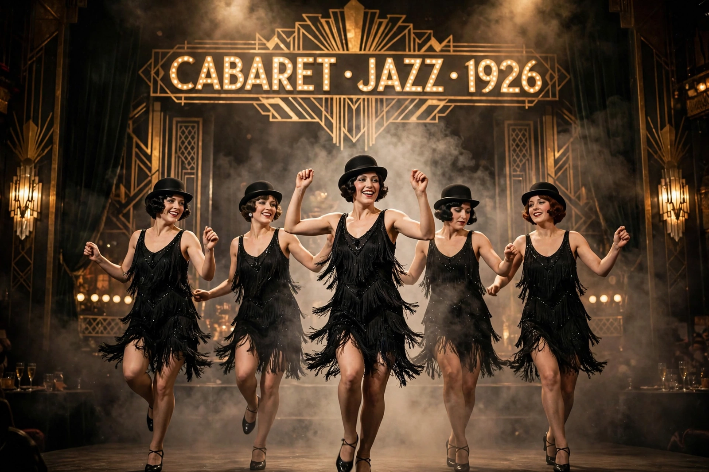

| Chicago | |
|---|---|
 | |
| Music | John Kander |
| Lyrics | Fred Ebb |
| Book | Fred Ebb and Bob Fosse |
| Basis | Chicago (1926 play) by Maurine Dallas Watkins |
| Premiere | June 3, 1975 — 46th Street Theatre, Broadway |
Chicago is an American musical with music by John Kander, lyrics by Fred Ebb, and book by Ebb and Bob Fosse. Set in Chicago in the jazz age, the show is based on a 1926 play of the same title by reporter (and later playwright) Maurine Dallas Watkins, about actual criminals and crimes on which she reported. The story is a satire on corruption in the criminal justice system and the concept of the "celebrity criminal."
Nightclub dancer Roxie Hart murders her lover and, in prison, meets vaudeville star Velma Kelly, who killed her husband and sister. Both are defended by the slick lawyer Billy Flynn, who manipulates the press to turn his clients into celebrity innocents. Staged as a series of vaudeville acts, each number modeled on a real 1920s performer, the score includes "All That Jazz", "Cell Block Tango", "When You're Good to Mama", "Razzle Dazzle", "Mr. Cellophane", and "Nowadays".
The original 1975 Broadway production, directed and choreographed by Fosse and starring Gwen Verdon, Chita Rivera, and Jerry Orbach, ran 936 performances but was overshadowed at the Tonys by A Chorus Line. A 1996 Encores! concert staging, directed by Walter Bobbie with choreography by Ann Reinking "in the style of Bob Fosse," transferred to Broadway and became a phenomenon: it won six Tony Awards, including Best Revival, and became the longest-running American musical in Broadway history, still running after more than 10,000 performances. The 2002 film adaptation, directed by Rob Marshall and starring Renée Zellweger, Catherine Zeta-Jones, and Richard Gere, won the Academy Award for Best Picture.